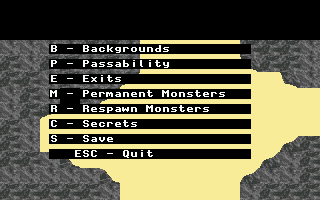

Each level is Troll Bridge is a collection of individual screens. ScreenEdit is a crude editor for a single screen. See the utilities for a program to combine screen files into a level.
 To load a screen simply pass the file as a command line argument. After loading you will be presented with a list of items that can be edited. 'ESC' is used to exit most functions in the editor.
Backgrounds: Editing the backgrounds allows you to change the screen layout. In this mode you have a select sprite and color shift. The sprite can be adjusted up and down with the '.' and ',' keys respectively. The color shift is modified up and down with the '=' and '-' keys. The direction keys control movement around the screen. To place a single background image on a square press 'Enter'. Since multiple copies of an image are often put together to create forests, rock formation, etc. it would be tedious to require individually placing each image. To begin drawing a group of images press 'Space'. Every square you move to will automatically be given the selected image. To stop drawing simply press 'Space' again.
Passability: Modifying passability of squares works in a similar fashion to editing backgrounds. Both the '.' ',' combination and the '=' '-' combination can edit the current passibility value. This value is not written to any of the squares until either 'Enter' is used to modify a single square or 'Space' is used to edit multiple squares.
| Value | Description |
|---|---|
| 0 | Open |
| 1 | Open but monsters cannot start here |
| 2 | Water |
| 3 | Blocked |
Exits: Existing exits are given a black and white rectangle around the square. To edit an exit move to the square and press 'Enter' or 'Space'. This will bring up the information on the exit. The filename of the level to load can be typed in. Modifying the map and screen coordinates are down with the right and left arrows. If you try to edit a square without an exit one is created. To delete an exit simply press 'd' when on the exit's square.
Permanent Monsters and Respawn Monsters: Permanent monsters appear everytime the character enters the screen. Respawning monsters don't reappear immediately if the hero slayed them. Instead they respawn if the hero fails to visit the screen within a certain time period. The two monster selection methods use the same interface. After selecting to edit monsters a list of all the monsters on the screen will appear. The up and down arrows will move around this list. Left and right decrement and increment the currently selected monster's type. The 'd' key will delete the current monster type from the list.
Secrets Secrets can either be exported to a text file or imported from one. The import code is not very fault tolerant. The file has a simple syntax shown below. Information on function names and arguments can be found on the file formats page.
unset1()
{
CreateItem(0, 140, 104, 1);
}
set1()
{
CreateMonster(0, 2);
}
Save: This saves the screen to disk. At presently there is no warning when you attempt to exit without saving changes. No save as functionality exists either so the original file is erased.